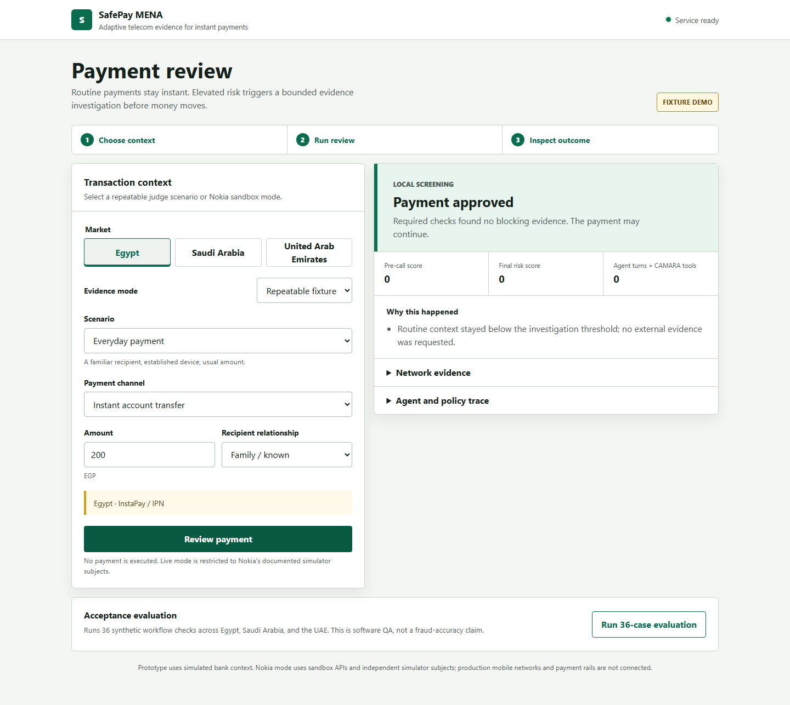

SafePay adds CAMARA network observations to bank context only when risk warrants it, using bounded AI tool orchestration and deterministic release policy.
SafePay orchestrates those observations as evidence. It does not treat any single signal as proof of fraud or payment intent.
Amount, channel, recipient relationship, session anomalies, and market.
Routine traffic approves without Gemini or CAMARA calls.
Gemini selects relevant allowlisted CAMARA tools and inspects results.
APPROVE, HOLD, BLOCK, or RETRY with an inspectable trace.

| Journey | Why SafePay acts | Expected disposition |
|---|---|---|
| Everyday payment | Known recipient, usual amount, established device | APPROVE - zero calls |
| First setup / new phone | Device trust has not been established | VERIFY, then continue |
| Suspicious transfer | Customer reports bank-transfer instructions from a caller | HOLD |
| SIM / device takeover | Network changes combine with session and payment anomalies | BLOCK |
| Card leakage / CNP | Checkout cannot verify the expected number and device context | BLOCK |
| Planned travel | Roaming is expected and identity evidence is clean | APPROVE |
| Provider unavailable | Required evidence is missing or rate-limited | RETRY - never fail open |
| CAMARA capability | Prototype use | Verified boundary |
|---|---|---|
| SIM Swap | Observe a change inside the requested window | Boolean only; exact age is not invented |
| Number Verification | Check the expected number association | Bound OAuth state and allowlisted redirects |
| Device Swap | Add device-change evidence for anomalous sessions | Not equivalent to app-device ownership |
| Roaming | Add travel context when relevant | Roaming alone is not fraud |
| Reachability | Retrieve availability when selected | Unreachability alone is not fraud |
+99999991000 and +99999991001 simulator subjects. Production MENA operator coverage is not claimed.The model receives transaction facts and pre-screen reasons, never the canned scenario label.
Five allowlisted tools, fixed schemas, no model-selected phone or URL, no repeat calls, and a hard evidence budget.
Missing required evidence prevents release. Independently supported blocks remain blocked; the model cannot fabricate an observation.
Accepted tool calls, evidence status, summarized failures, and the final policy source are exposed in the result trace.
Prototype context for InstaPay / IPN payment journeys.
Prototype context for sarie payment journeys.
Prototype context for Aani and card-checkout journeys.
Banks, wallets, processors, and instant-payment applications integrate a decision API before release.
Platform fee plus usage-based investigated transactions, aligned to operator API economics and measured pilot value.
Confirm available APIs, consent flow, simulator-to-production differences, and operator coverage.
Replay consented, labeled fraud and legitimate cases in a bank sandbox with agreed controls.
API latency, intervention rate, false positives, prevented loss, customer friction, and unit economics.
SafePay MENA: network evidence when it matters, deterministic control before money moves.